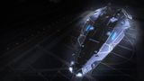

Максимум пассажиров (экономкласс)
~170
Добротный пассажирский корабль без лоска специализированного лайнера. Много мест и лучшая в классе дальность прыжка позволяют возить туристов к далёким достопримечательностям, куда другие лайнеры не доберутся одним прыжком. Этот же корабль можно использовать для исследований, грузоперевозок и боёв. Ранг не нужен, бонуса за комфорт нет: заработок зависит от дальности и гибкости, а не от высокой платы за место.

Оценка пригодности корабля от 1 до 100 учитывает его полностью улучшенную сборку и сравнивает её с другими кораблями в этой роли. Подробнее: как оцениваются корабли.
Anaconda возит пассажиров так же, как и делает всё остальное: уверенно, помногу и на огромные расстояния. Двенадцать дополнительных отсеков вмещают каюты примерно на 170 мест экономкласса. Лучшая в классе дальность прыжка позволяет добраться до далёких достопримечательностей за меньшее число прыжков, чем на специализированном лайнере. В дальних обзорных турах за пределы Пузыря дальность решает всё: там, где Beluga или Orca нужна серия прыжков, Anaconda часто справляется одним.
Главные достоинства — дальность и универсальность: не нужны ранг или пропуск, и подходит тот же корпус, на котором вы уже исследуете или возите грузы. Есть и минусы: без бонуса за комфорт пассажиры платят обычную цену, нужна большая площадка, а страховка дорогая. Это универсал, который летит дальше, а не лайнер, который больше зарабатывает с каждого места.
Дальние обзорные туры по разбросанным маякам, где дальность важнее комфорта; смешанные рейсы с VIP и экономклассом, где нужно много мест; и любые случаи, когда хочется на одном корабле на этой неделе возить пассажиров, а на следующей исследовать или возить грузы.
Четыре преимущества Anaconda в перевозке пассажиров:
У него нет бонуса за комфорт, поэтому пассажиры платят обычную цену. При тех же каютах Beluga, Orca или Lynx заработают больше с каждого места, а Imperial Cutter превосходит Anaconda по щитам и числу мест. Нужна большая площадка, страховка дорогая. Делайте ставку на дальность и гибкость: по заработку с места специализированные лайнеры впереди.
Лучшая дальность в классе и около 170 мест в 12 дополнительных отсеках. Без бонуса за комфорт, с большой площадкой и страховкой около 18 млн уступает специализированным лайнерам.
82/100 — итоговая оценка по критериям пассажирской роли в порядке важности. Для каждого критерия есть вес (его доля из 100). Баллы по нему зависят от того, как корабль показал себя на фоне остальных. Сумма баллов даёт итоговую оценку.
| Критерий | Баллы | Почему столько |
|---|---|---|
| Вместимость и классы кают | 32/35 | В двенадцати отсеках (7·6·6·6·5·5·5·4·4·4·2·1) помещается около 170 мест экономкласса или набор экономических, первоклассных и роскошных кают. Третий результат после Cutter (~340) и Beluga (~184). Щит в слоте 7-го размера оставляет все слоты 6-го размера под пассажиров. |
| Комфорт | 11/20 | У корабля Faulcon DeLacy нет бонуса за комфорт, поэтому пассажиры платят обычную цену. Beluga, Orca, Lynx и Dolphin с теми же каютами зарабатывают больше на каждом месте. Это главное ограничение оценки. |
| Дальность прыжка и живучесть | 20/20 | Лучшая дальность среди пассажирских кораблей: около 60 св. лет с грузом после улучшений и около 78 св. лет в лёгкой сборке. Дальние туристические маяки доступны за меньшее число прыжков, чем у специализированных лайнеров. Лидер по дальности с FSD G5 с «Увеличенной дальностью». |
| Щит и безопасность | 13/15 | Улучшенный двухконтурный щит и шесть усилителей с «Усиленной конструкцией» в восьми внешних креплениях дают около 1200 МДж или больше. В военном слоте 5-го класса стоит усиление корпуса. Для пассажиров защита хорошая, хотя щит боевого Imperial Cutter мощнее. |
| Размер площадки и стоимость | 6/10 | Большая площадка закрывает доступ к средним площадкам и аванпостам, где садятся Lynx и Dolphin. Корпус стоит около 147 млн кредитов, сборка класса A около 366 млн, страховка около 18 млн. Зато ранг и пропуск не нужны, а каюты можно заменить грузовым или исследовательским оборудованием. |
| Взвешенный итог | 82/100 | Эта сумма совпадает с общей оценкой корабля в этой роли. |
Вес критерия отражает приоритеты авторов гайда, а не формулу игры. Длина полосы показывает, какую долю от максимума корабль набрал по этому критерию. Подробнее: как оцениваются корабли.
Таблицы сравнивают корабли именно для перевозки пассажирови разделяют их по размеру посадочной площадки. Столбец Вместимость кают показывает общее число мест под каюты в дополнительных отсеках; рейтинг от 1 до 100 сопоставим с остальными досье.
| Корабль | Класс | Вместимость кают | Плюсы и минусы | Оценка |
|---|---|---|---|---|
| Beluga Liner | Большая | ~370 т | Оценка выше; каюты; комфортДальность | 95 |
| Imperial Cutter | Большая | ~794 т | Оценка выше; каюты; щитКомфорт | 89 |
| Orca | Большая | ~194 т | Оценка выше; комфорт; площадка/ценаДальность | 88 |
| Anaconda этот | Большая | ~470 т | — отправная точка для сравнения | 82 |
| Imperial Clipper | Большая | ~250 т | Щит; дальностьОценка ниже; комфорт | 64 |
| Caspian Explorer | Большая | ~434 т | Каюты; дальностьОценка ниже; площадка/цена | 60 |
| Type-7 Transporter | Большая | ~310 т | Каюты; площадка/ценаОценка ниже; комфорт | 56 |
| Type-9 Heavy | Большая | ~790 т | Каюты; площадка/ценаОценка ниже; комфорт | 56 |
| Panther Clipper Mk II | Большая | ~662 т | Каюты; щитОценка ниже; площадка/цена | 48 |
В рейтинге 9 пассажирских кораблей для больших площадок. Лидер — Beluga Liner (95). Все соперники в таблице садятся на такие же площадки. С них и стоит начинать сравнение.
| Корабль | Класс | Вместимость кают | Плюсы и минусы | Оценка |
|---|---|---|---|---|
| Lynx Highliner | Средняя | — | Оценка выше; комфорт; площадка/ценаЩит | 90 |
| Python | Средняя | ~294 т | Щит; площадка/ценаОценка ниже; комфорт | 70 |
| Krait Phantom | Средняя | ~190 т | Дальность; площадка/ценаОценка ниже; комфорт | 64 |
| Asp Explorer | Средняя | ~130 т | Площадка/цена; дальностьОценка ниже; комфорт | 60 |
| Mandalay | Средняя | ~154 т | Площадка/цена; дальностьОценка ниже; комфорт | 54 |
| Corsair | Средняя | ~318 т | Каюты; щитОценка ниже; комфорт | 50 |
| Krait Mk II | Средняя | ~230 т | Каюты; дальностьОценка ниже; площадка/цена | 46 |
| Type-8 Transporter | Средняя | ~406 т | Каюты; площадка/ценаОценка ниже; комфорт | 46 |
В рейтинге 8 пассажирских кораблей для средних площадок. Лидер — Lynx Highliner (90). Эти корабли дешевле и садятся на меньших площадках, но относятся к другому классу.
| Корабль | Класс | Вместимость кают | Плюсы и минусы | Оценка |
|---|---|---|---|---|
| Dolphin | Малая | ~88 т | Комфорт; площадка/ценаОценка ниже; каюты | 80 |
| Imperial Courier | Малая | ~34 т | Площадка/цена; щитОценка ниже; каюты | 52 |
В рейтинге 2 пассажирских корабля для малых площадок. Лидер — Dolphin (80). Эти корабли дешевле и садятся на меньших площадках, но относятся к другому классу.
Сам корпус стоит около 147 млн кредитов, а пассажирское оснащение дороже, чем кажется: первый класс и роскошь стоят недёшево. Поэтому комплект класса A со щитом и дальнобойным FSD обойдётся примерно в 366 млн кредитов. На страховку отложите около 18 млн.
Зато это не вложение в одну роль: каюты можно на станции заменить на грузовые стеллажи или исследовательское оснащение. Один и тот же корабль с улучшениями окупается в пассажирских рейсах, грузоперевозках и исследованиях. Если Anaconda уже есть, купить каюты намного дешевле покупки отдельного лайнера.
Пассажирский комплект стоит около 366 млн кредитов. Ранг не нужен; каюты заменяются грузовым или исследовательским оснащением, так что вложения пригодятся не в одной роли.
Сборка дальнего пассажирского корабля: много кают, щит и дальнобойный FSD, без вооружения. Начальная — только покупные модули; класс A — пассажирская база; инженерная сборка увеличивает дальность и защищает пассажиров. В отсеке 7-го размера стоит щит (пассажирские каюты не бывают больше 6-го размера), поэтому все отсеки 6-го размера остаются под пассажиров.
| Отсек | Начальная · только покупка | Класс A · без улучшений | С инженерными улучшениями | Примечания |
|---|---|---|---|---|
| Внешние крепления | ||||
| Крепление 1 | 0A Усилитель щита | 0A Усилитель щита | G5 Усиленная конструкция + Суперконденсаторы | Первый усилитель щита. «Усиленная конструкция» повышает прочность двухконтурного щита в МДж для защиты VIP. |
| Крепление 2 | 0A Усилитель щита | 0A Усилитель щита | G5 Усиленная конструкция + Суперконденсаторы | Второй усилитель с «Усиленной конструкцией» даёт заметную прибавку к щиту за небольшую цену. |
| Крепление 3 | 0A Усилитель щита | 0A Усилитель щита | G5 Усиленная конструкция + Суперконденсаторы | Третий усилитель с «Усиленной конструкцией». Прибавка уже меньше, но для пассажирского рейса полезна. |
| Крепление 4 | — | 0I Точечная оборона | G1 Дополнительный боезапас (без экспериментального эффекта) | Необязательно. Дополнительный боезапас даёт больше выстрелов. Точечная оборона сбивает подлетающие ракеты и торпеды. |
| Крепление 5 | — | 0I Теплоотводная катапульта | G1 Дополнительный боезапас (без экспериментального эффекта) | Необязательно. Дополнительный боезапас даёт больше теплоотводов. Они снимают нагрев при скрытном ходе и помогают сбросить температуру. |
| Крепление 6 | — | 0A Усилитель щита | G5 Усиленная конструкция + Суперконденсаторы | Четвёртый усилитель с «Усиленной конструкцией», когда хватит кредитов. |
| Крепление 7 | — | 0A Усилитель щита | G5 Усиленная конструкция + Суперконденсаторы | Пятый усилитель добавляет щиту прочности на опасных маршрутах. |
| Крепление 8 | — | 0A Усилитель щита | G5 Усиленная конструкция + Суперконденсаторы | Шестой усилитель в последнем креплении. Снимите пару, если хотите облегчить корабль ради максимальной дальности. |
| Основные модули | ||||
| Обшивка | Лёгкий сплав | Лёгкий сплав | Облегчение 5-й ступени (без экспериментального эффекта) | |
| Силовая установка | 8E Силовая установка | 8A Силовая установка | G5 Форсирование + Рассеивание тепла | Без оружия много энергии не нужно. «Пониженные выбросы» уменьшают нагрев и массу, а «Рассеивание тепла» помогает не перегреваться в длинных рейсах. |
| Маневровые двигатели | 7E Маневровые двигатели | 7A Маневровые двигатели | G5 Грязная настройка двигателей + Форсированные двигатели | Класс A с улучшением «Грязная настройка» помогают управлять тяжёлым гружёным кораблём на подлёте к станции и при вылете. |
| Рамочно-сместительный двигатель (FSD) | 6E Рамочно-сместительный двигатель (FSD) | 6A Рамочно-сместительный двигатель (FSD) | G5 «Увеличенная дальность» + Управление массой | В первую очередь поставьте класс A: «Увеличенная дальность» G5 вместе с «Управлением массой» даёт главное преимущество сборки и открывает задания, недоступные лайнерам. |
| Система жизнеобеспечения | 5E Система жизнеобеспечения | 5A Система жизнеобеспечения | G5 Облегчение (без экспериментального эффекта) | Класс A увеличивает запас аварийного кислорода для пассажиров. «Облегчение» снижает массу; экспериментального эффекта нет. |
| Распределитель питания | 8E Распределитель питания | 8A Распределитель питания | G5 Упор на двигатели + Суперпроводники | Упор на двигатели увеличивает ёмкость контура ENG для частого форсажа, а «Сверхпроводники» ускоряют зарядку. |
| Сенсоры | 8E Сенсоры | 8D Сенсоры | G5 Облегчение (без экспериментального эффекта) | Поставьте класс D и «Облегчение». Пассажирскому кораблю не нужна большая дальность сенсоров, а меньшая масса увеличит дальность прыжка. |
| Топливный бак | 5C Топливный бак | 5C Топливный бак | (нет чертежа улучшения) | Штатный бак 5C с фиксированной ёмкостью, инженерные улучшения недоступны. Добавьте топливозаборник для дальних туристических перелётов. |
| Военные отсеки | ||||
| Военный отсек 1 | — | 5D Усиление корпуса | Облегчение 5-й ступени (без экспериментального эффекта) | Облегчение усиление корпуса добавляет немного брони и сопротивления без лишней массы от «Усиленной конструкции». Дальность сохраняется. |
| Дополнительные отсеки | ||||
| Размер 7 | 7E генератор щита | 7C Генератор двухконтурного щита | G5 Усиленный + Быстрая зарядка | Двухконтурный щит в отсеке 7-го размера, где нет подходящих кают. «Усиленный» повышает запас МДж, а «Быстрая зарядка» сохраняет быстрое восстановление. |
| Размер 6 | 6E Пассажирская каюта экономкласса | 6E Пассажирская каюта экономкласса | (нет чертежа улучшения) | Каюта экономкласса для массовых туристических рейсов. Меняйте класс под задание. |
| Размер 6 | 6E Пассажирская каюта экономкласса | 6C Пассажирская каюта первого класса | (нет чертежа улучшения) | Каюта первого класса для более дорогих билетов. Каюты не улучшают у инженеров. |
| Размер 6 | — | 6B Роскошная пассажирская каюта | (нет чертежа улучшения) | Роскошная каюта для VIP в отсеке 6-го размера, освободившемся после переноса щита. |
| Размер 5 | 5E Пассажирская каюта экономкласса | 5E Пассажирская каюта экономкласса | (нет чертежа улучшения) | Каюта экономкласса для массовой перевозки. |
| Размер 5 | — | 5C Пассажирская каюта первого класса | (нет чертежа улучшения) | Первый класс для заданий со средней оплатой. |
| Размер 5 | — | 5A Топливозаборник | (нет чертежа улучшения) | Каюта экономкласса. Меняйте на бизнес-класс или грузовой стеллаж, когда переходите к грузоперевозкам. |
| Размер 4 | — | 4E Пассажирская каюта экономкласса | (нет чертежа улучшения) | Каюта экономкласса в небольшом отсеке. |
| Размер 4 | — | 4E Пассажирская каюта экономкласса | (нет чертежа улучшения) | Каюта экономкласса. Для дальних туров можно заменить на топливозаборник или ремонтных дронов. |
| Размер 4 | — | 4A Блок накопителей щита | G4 Специализированный + «Контроль потока» | Необязательно. «Специализированный» уменьшает скачок нагрева и потребления. Блок помогает быстро восстановить щит в экстренной ситуации. |
| Размер 2 | — | 2E Пассажирская каюта экономкласса | (нет чертежа улучшения) | В отсек 2-го размера помещается только каюта экономкласса, ещё пара мест. Бизнес, первый и роскошный классы начинаются с размера 3. |
| Размер 1 | — | 1E Помощник суперкруиза | (нет чертежа улучшения) | Необязательно. Улучшение увеличивает площадь, которую покрывает каждый зонд при составлении карты планеты. |
| Планировщики и экспорт | ||||
| Открыть в Coriolis | открыть | открыть | открыть | Открывает сборку на coriolis.io. |
| Открыть в EDSY | открыть | открыть | открыть | Открывает сборку на edsy.org. |
| Скопировать SLEF | Копирует выбранную сборку в формате экспорта оснащения корабля (SLEF). | |||
Подбирайте каюты под задания: экономкласс для массовых туров, первый и роскошный для VIP. Используйте дальность Anaconda, чтобы брать задания к отдалённым маякам. Для опасных маршрутов оставьте мощный щит и точечную оборону . Бонуса за комфорт нет, поэтому главные плюсы Anaconda — дальность и вместимость. Меняйте каюты на грузовые стеллажи при переходе к грузоперевозкам.
Купите корабль и поставьте три каюты экономкласса. Первый и роскошный классы появятся только в сборке класса A.
Оставьте штатную лёгкую обшивку: для дальности нужна минимальная масса, а выживаемость обеспечит щит. Улучшение корпуса G5, которое снижает массу, добавьте на этапе работы с инженерами.
Оставьте базовый генератор щита 5C и поставьте три усилителей щита на внешние крепления. точечную оборону, теплоотводы и остальные усилители добавьте в сборку класса A.
Пока оставьте пустыми военный слот, меньшие дополнительные отсеки и места под топливозаборник, помощник суперкруиза и другие вспомогательные модули. В первую очередь поднимите до класса A FSD и к маневровым двигателям : дальность определяет эту сборку.
Что первым поднимать до класса A для дальних пассажирских рейсов:
Anaconda зарабатывает дальностью, а не бонусом за комфорт. Сначала поднимите до класса A FSD , чтобы брать дальние задания, затем установите каюты и щит. Заборник топлива 5A позволит заправляться между туристическими маяками без стыковки. В отсек 1-го размера поставьте помощник суперкруиза для длинных перелётов. Добавьте ускорителя FSD Стражей , чтобы увеличить дальность ещё.
Инженерные модификации для пассажирской роли с упором на дальность. Felicity Farseer улучшает FSD. Закрепляй чертежи для удалённого применения с 1-й по 5-ю ступень.
| Модуль | Чертёж | Экспериментальный эффект | Инженер |
|---|---|---|---|
| Рамочно-сместительный двигатель (FSD) (6) | «Увеличенная дальность» (G5) | Управление массой | Felicity Farseer |
| Маневровые двигатели (7) | Грязная настройка двигателей (G5) | Форсированные двигатели | Professor Palin / Mel Brandon |
| Силовая установка (8) | «Низкие выбросы» (G5) | Рассеивание тепла | Hera Tani |
| генератор щита (7) | Усиленный (G5) | Быстрая зарядка | Lei Cheung |
| Усилители щита | Усиленная конструкция (G5) | Суперконденсаторы | Didi Vatermann |
| Распределитель питания (8) | Упор на двигатели (G5) | Суперпроводники | The Dweller |
| Обшивка | Облегчение (ступень 5) | — | Selene Jean |
| Усиление корпуса (5) | Облегчение (ступень 5) | — | Selene Jean |
| Система жизнеобеспечения / Сенсоры | Облегчение (G5) | — | Etienne Dorn |
От небольших до средних для пассажирской роли: FSD, двигатели, установка и щит. Не нужно собирать материалы на оружие. С полным инвентарём материалы только тратятся; при необходимости уточните расход на каждый чертёж.
Ориентировочные показатели для трёх сборок. Точный результат зависит от оснащения:
| Показатель | Начальная | Класс A | С инженерными улучшениями |
|---|---|---|---|
| Пассажирские места | ~80 | ~92 | ~92 |
| Дальность с грузом, св. лет | ~30 | ~45 | ~60 |
| Щит (МДж) | ~500 | ~800 | ~1,200+ |
| На борту топливозаборник | нет | 5A | 5A |
| Бонус лайнера за комфорт | нет | нет | нет |
После инженерных улучшений Anaconda вмещает около 92 пассажиров разных классов и прыгает дальше любого соперника. Она быстрее добирается до разбросанных маяков и заправляется в пути с помощью заборника, так что на дальних маршрутах не останется без топлива. Лёгкая обшивка сохраняет дальность. Защиту дают двухконтурный щит, шесть усилителей и батарея щита, а не броня. Бонуса за комфорт нет, и плата за место ниже, чем у лайнеров, зато дальность и автономность позволяют брать задания, которые тем не под силу.
Лучше всего подходят разбросанные дальние достопримечательности: туда Anaconda добирается одним прыжком, когда специализированному лайнеру нужно несколько. С домашней базы берите задания, которые уводят дальше всего.
Anaconda — дальнобойный пассажирский универсал: много кают и лучшая дальность, позволяющая достигать достопримечательностей, недоступных специализированным лайнерам одним прыжком. Без бонуса за комфорт доход с места ниже, нужна большая площадка, а страховка дорогая. Зато корабль берёт дальние задания, с которыми лайнеры не справятся, и может служить исследователем или грузовиком. Это не выбор ради роскоши, а выбор ради дальности.
Цифры в статье сверены авторами оригинала с источниками ниже.